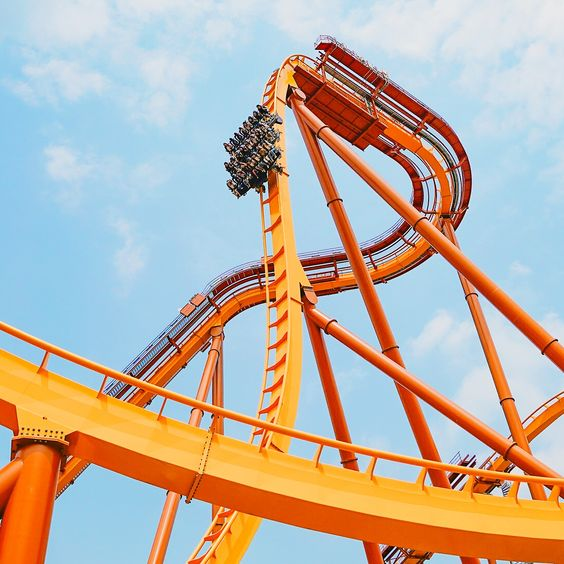
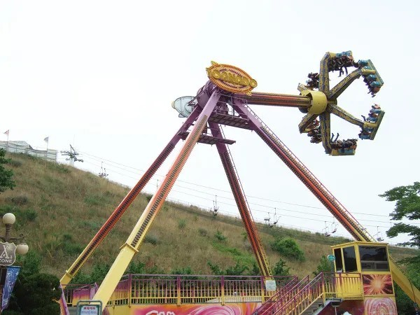
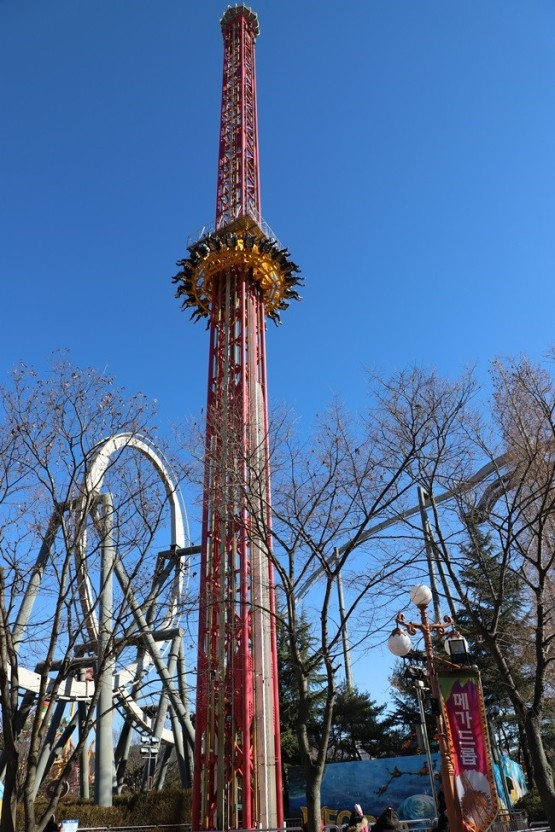
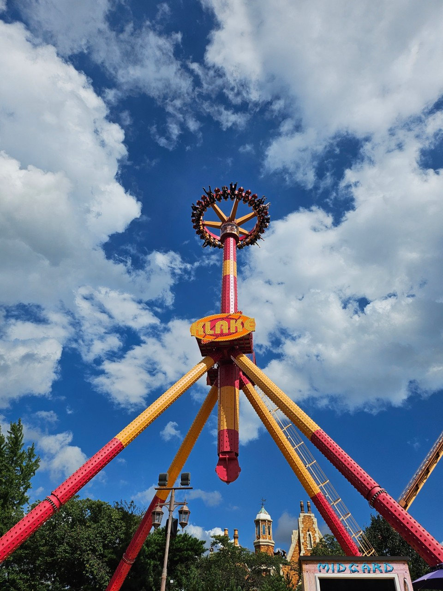

스키장 사고 관련 기사
[은빛 설원 질주하다 ‘쾅’…스키장 안전사고 주의하세요...]
-강원일보4면 1단2022.12.13.네이버뉴스-
>>기사내용더보기<<
주소 : 서울 용산구 남산공원길 105 (지번 : 용산동2가 산1-3) ㅣ 우편번호 : 04340 ㅣ 전화번호 : 02-756-2486
데이트 코스로 유명한 남산타워에는 연인들을 위한
사랑의 자물쇠최소 9,000원를 판매하고 있다.
이곳에 자물쇠를 걸면 사랑이 이루어 질 지도?
| 층 수 | 시설 | 비고 |
|---|---|---|
| 타워 7층 | 엔그릴/기계실 | 양식당 '엔그릴'이며 이곳에서는 개성과 인천의 관측도 가능하다.
특히 이곳은 48분당 한바퀴를 도는 형태로 되어있다. |
| 타워 6층 | N칼국수,전망대 | N칼국수식당은 2015년 만들어 주인사업이고, 50인의 고객을 수용할 수 있다.
또한 휴전선까지 관측 가능하다 |
| 타워 5층 | 전망대, N기프트, N포토, 위니비니 | 디지털 전망대와 상행 엘리베이터가 있다. |
| 타워 4층 | 전망대, N포토 스튜디오, 하늘 화장실, 투썸커피 | 아날로그 전망대와 하행 엘리베이터가 있다. |
| 타워 3층 | 한쿡 | 뷔페식 한식당 '한쿡'이다. 이곳에서는 서울 시내까지만 보인다. |
| 타워 2층 | 루프테라스, 더 플레이스 다이닝 | 루프테라스, 더 플레이스 다이닝이 있다. |
| 타워 1층 | 치켓부스, 푸드오클락, N버거, N테라스, N기프트, 투썸커피, 올리브영, 포토 스토리 | N으로 시작하는 명칭들이 있다. |
| 5층 | 전망대 가는 길, 헬로키티아일랜드, 썬토이 박물관,
안내데스크, N기프트, N스위트바, 투썸커피, 화장실 |
N으로 시작하는 명칭들이 있다. |
| 4층 | 계절밥상, 게임플라자, 호식이두마리치킨, 아참, 러브터널, 석양존,
스타토토, 스타포토, 포토카드사진기, 유후랜드, 올레드 웨이브, 3D체험관, 화장실 |
게임방, 치킨집, 미디어 시설 등이 있다. |
| 3층 | 방송관계시설 | 일반인이 접근할 수 없게끔 엘리베이터와 계단 등이 모두 통과하는데 방송관계시설이 위치하여
일반인은 들어갈 수 없다는 설명이 외부 계단 등에 붙어 있다. 추측컨대 탑 맨 위의 안테나와 연결된 전파 송출 장비가 있는 것으로 보인다. |
| 2층 | 본 우리반상, 사랑의서약 사진기, 올레드 서클, 화장실 | 본 우리반상, 사랑의서약 사진기, 올레드 서클, 화장실이 있다. |
| 1층 | 스타벅스, K명품관, 솔나라, 공차, 서울타워 기념품샵, 린린랜드, 프로포즈 계단,
사랑의서약 사진기, 올레드 터널, 올레드 파노라마, 반월당고로케, 화장실 |
커피집, 기념품샵 등이 있어 화장실도 있다. |
| 지하 1층(로비) | 한복문화체험관 | 대한민국의 전통인 한복문화를 체험할 수 있다. |
주소 : 경기 경주시 보문로 544 (지번 : 천군동 191-5) ㅣ 우편번호 : 38117 ㅣ 전화번호 : 1544-8765
수도권 놀이동산보다 더욱 스릴있는 데이트가 가능한 놀이공원으로 스릴있는 이색 데이트가 가능하다.
경주에 온 김에 즐길 수 있다면 즐겨보기!
무서운 놀이기구를 잘 못탄다면 아쉬울 수 있다.
| 이미지 |  |  |  |  |
|---|---|---|---|---|
| 이름 | 드라켄 | 토네이도 | 메가드롭 | 크라크 |
| 영문명 | Dive Coaster | Tornado | Mega Drop | Klaker |
| 개장일 | 2018년 5월1일 | 2001년추정 | 2001년추정 | 2017년 12월23일 |
| 운행시간 | 2분 20초 | 2분 50초 | 약 1분 | 4분 10초 |
| 탑승인원 | 24명 | 24명 | 20명 | 30명 |
| 최고속도 | 117km/h | 80km/h추정 | 98km/h | 80km/h |
| 최고높이 | 63m | 22m추정 | 68.3m | 30m |
겨울에 빠질 수 없는 스포츠로 알려진 스키장,
추운 겨울, 오순도순 이색스포츠 즐기기 좋다.
새해에 와서 해돋이를 볼 수 있는 곳으로 뽑히곤 한다.
1박할게 아니라면 지양하는 편이 좋다
| 스키 부상 부위 | 보드 부상 부위 | ||
|---|---|---|---|
| 무릎 | 33% | 손목 | 20.4% |
| 엄지손가락 | 6.6% | 어깨 | 11.7% |
| 어깨 | 6.4% | 발목 | 6.2%` |
| 하체 타박상 | 6.0% | 하체 타박상 | 5.1% |